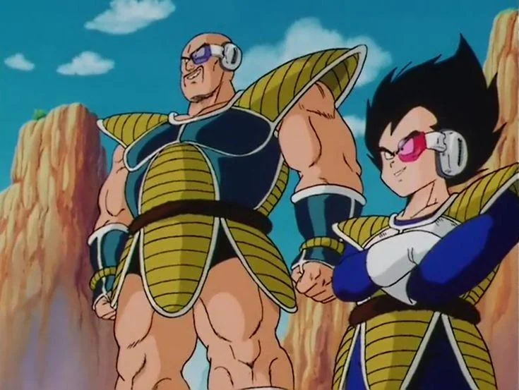

Raditz Chega à Terra
A chegada de Raditz marca o início da saga dos Saiyajins. Ele revela a Goku sua origem como um guerreiro Saiyajin e o desafia para uma batalha que mudará o rumo da história.
Os Guerreiros Z vs Saibamans
Os Saibamans enfrentam os Guerreiros Z em uma batalha que testa a força, estratégia e coragem dos heróis. Yamcha, Kuririn e Piccolo lutam bravamente contra os monstros enviados pelos Saiyajins.

Vegeta e Nappa vs Goku
Na batalha final, Vegeta e Nappa desafiam os Guerreiros Z. Goku usa o Kaioken para superar seus limites e proteger a Terra, enquanto Vegeta revela seu imenso poder ao se transformar em Oozaru.